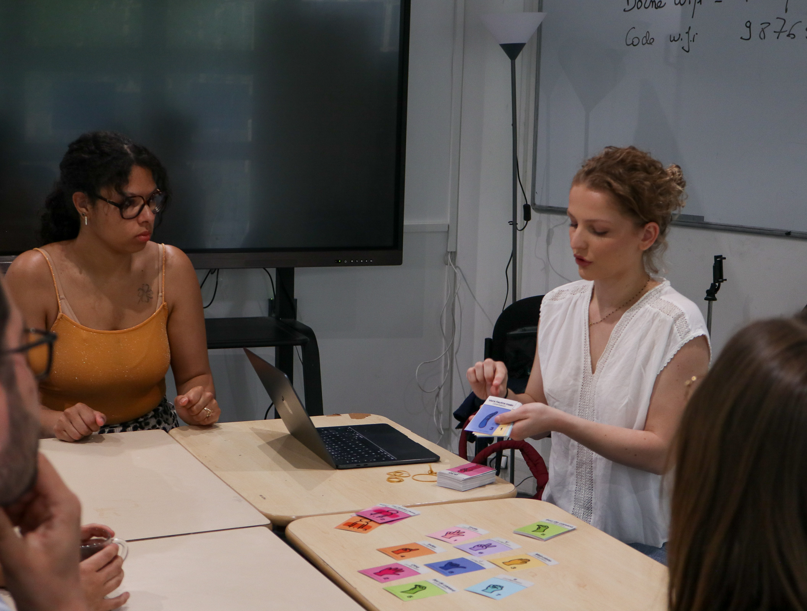
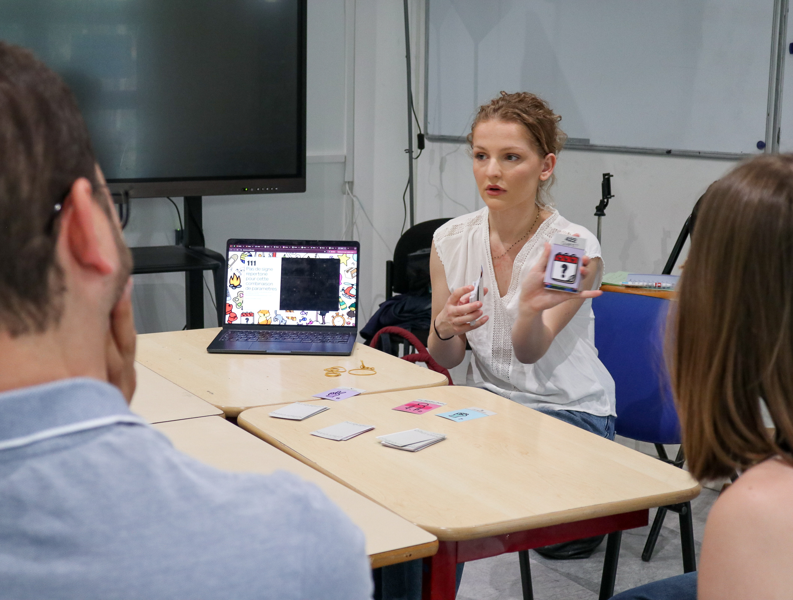

Chérème
Discipline
Création du gameplay, Design éditorial, Illustration, Fabrication, Code HTML
Année
2026
Contexte
Chérème est un jeu de société autour de la Langue des Signes Française, pensé par le design graphique et la didactique visuelle. Fondé sur l’exploration de la structure linguistique de la langue, Chérème propose une approche basée sur l’analyse et la manipulation des composants du signe à savoir les différents paramètres (configuration, emplacement, orientation, mouvement) à travers un principe combinatoire. L’interface numérique permet de visualiser les signes en vidéo, médium privilégié pour la représentation du mouvement.
Crédits
Interprète: Anissa Mae



